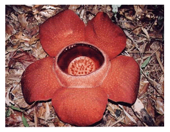

>
ดอกไม้ประจำจังหวัด

ดอกบัวผุด หรือ กระโถนฤาษี, บัวตูม, บัวสวรรค์ มีชื่อเรียกสามัญว่า Sapria Himalaya เป็นพืชกาฝากที่อาศัยน้ำเลี้ยงจากรากของเถาวัลย์น้ำอย่าง ส้มกุ้ง หรือเครือเขาน้ำ เป็นพืชไม่มีใบ ไม่มีลำต้น มีเพียงดอกสีแดง แซมด้วยสีเหลือง มีขนาดประมาณ ๑๐ เซนติเมตร และจะโผล่ขึ้นมาจากดินเท่านั้นในจังหวัดสุราษฎร์ธานี พบได้ที่ อุทยานแห่งชาติเขาสก และอุทยานแห่งชาติคลองพนม